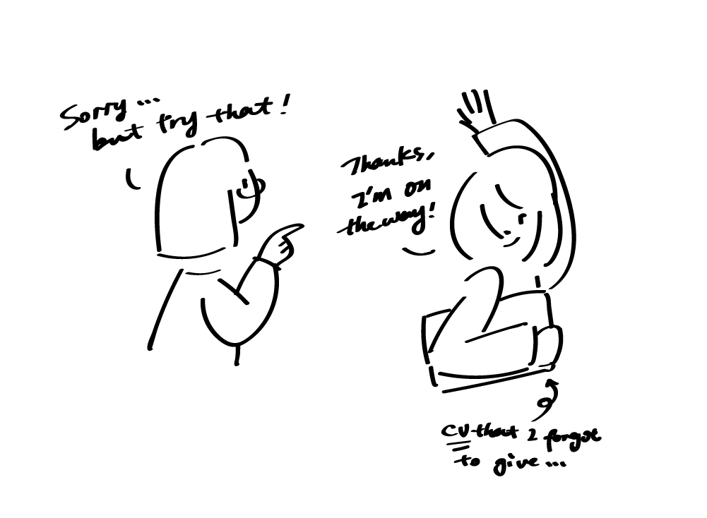

I always feel that I am different, but cannot really tell which part.
My teachers noticed that and they were very encouraging - they told me
after my final presentation, “you have just f**king great voice in your
works, some designers tried their whole lives to have that sense of voice,
and you just have it. That is really rare.”
However, I did not value that - I used to think that being different stopped
me from many opportunities. So many places just need things to be done, and
a person that thinks about fluffy concepts and thoughts? Maybe not a wise
idea to spend the money on. It is so easy to ignore our own values in this
stage, but trying to hide - for me, it is to hide the works that like art and just show “design”
design, to hide the special voice and just be like everyone else, is not that easy as well.
I tried, but then I found it impossible. One of the main reasons is that I have
a clear mind of what I want to get in these two years. It took me a long way
to make it clear (also need strong support from my family) - so many times,
I nearly gave up and just want to focus on finding a hospitality job to feed myself.
But I kept reminding myself that I want to explore, I want to get into the industry,
I want to do whatever makes me happy - hiding all the time is not what I can bear,
it should be my time to play.
Besides that, I cannot hide it anyway, guys, I just can’t.
You are weird - Cally Bennett, NGV
I noticed that when I met Cally.
“How did you know that was me?” I asked her when we first met. I was so surprised that she walked straight to me when she saw me.
Cally is another explorer in the creative industry and she has been in this journey for a long time. With a long list of working
experience in different environments, Cally helped me with advice based on my personal interests and cultural background. We also talked
about her design life now in NGV and she bought me the drinks (normally we pay separately or I pay for both).
About that question, Cally was quite honest as well. “Oh, it's quite obvious - you look weird”, she said, “but in a good way.”
(After that, she also admitted that she is weird as well)
“I cannot hide!” I screamed in my mind, “What can I do now then?”
Things actually became easier when I faced this situation - if I cannot change it, then accept it, and guess what, maybe some places value my weirdness.
Since then, I was like the words that Amiel told me after hearing my stories, “it is the time for you to fly your freak flag, and fly it high.”

You are a creative person and we will meet someday again - Ros Horner, AKQA
Where to start then? Duan provided a clue - Advertising might be a good place to try, they do not really care about your backgrounds
and they are more welcome weird people. With no ideas of what I want to do specifically, I just applied as many opportunities as I can.
Luckily, I got some applies after a long time waiting. One of the most exciting interview invitations was from the ad agency, AKQA.
I never learned that much from an interview - it somehow helped me to accept myself more, though it was not a successful one.
It was for a junior experience designer role and was my first time to go for an interview in such a big company. The interview was nice,
I really like my interviewer Ros Horner, Design Director - I always feel something when I see females that work in the industry, especially
those who work in high positions. I can always get inspired and feel full of power just seeing them being there.
Besides meeting amazing people there, the most valuable part was after the interview, I got a call from the company, telling me
that I cannot join the team but Ros left me some advice based on my performance. It is rare for a company to tell us these reflection
details after an interview - I value that a lot. I have the habit of writing down my pros and cons after interviews and most of the things
I mentioned matched with their feedback. Most importantly, in the end, they told me that Ros thinks I am the kind of person that needs to
live with creativity, so she strongly encouraged me to apply for creative roles in the future.
At that time, I do not know where will accept me as a creative, but I feel more confident exploring in that direction -
people began to notice my voice and try to give help.
Don't forget to trust yourself - Olivia Gatt, Clemenger BBDO
I tried to get into the networks of advertising in Melbourne, but it was not that easy, so I asked for more help.
I met Olivia in March, that time I wanted to know more insights about stepping into the ad industry with a design
background. Olivia is the perfect person to talk about this, she has the working experience in the design studio before
(mostly identity design and print), and now she works in advertising
(digital design). Besides that, she is so sweet
and thoughtful - she spent some time on my works before we met and I did not feel that I was asking all the time, instead,
we had a discussion about the relationship between print and digital design and how to balance the life and work.
Olivia is really encouraging as well, and she always reminds me of valuing myself. She likes my branding system
and she mentioned that several times. At the end of the chat, she told me that, “Keep being creative, you are now doing
some things that many people might not think of, cannot do, or even afraid to do. You will have a lot of possibilities and
I feel excited for you”.
Olivia helped to run the ad social group called Youngbloods, and because of that, I joined some of the activities.
Though I am still practising my social skills, I got to feel more about the people working in the industry.
Also, our conversation did not stop there, after several months, I sent Olivia an update email to tell her my
experience having the interview with AKQA. She felt happy for me and also reminded me that, “The design director gave
some lovely advice. But don’t forget to trust yourself and say yes to as many opportunities as possible. Even if they
aren’t particularly ‘creative’, you can make it creative once you've got your foot in the door”.
I think Olivia is right, believing in myself is right, flying the flag is right. After several months, I work in Clemenger
BBDO as an intern, starting from a message “thanks for being awesome” that I received on Instagram. Though my title is not
creative, I actively contribute to creative briefs, and we will talk about that in other stories.
Something more:
I made this video on my birthday this year, I made it for myself, my families and for the time. It was when
my parents kind of losing the hope on me - they asked me to either go back to China or find any kinds of jobs that
I can. I need a form to communicate with them, but lots of communication went to fights, and we just cannot be calm
enough to listen to each other. Because of my friends and also my promise with Amile that I will make a “film”
(he was super excited about that promise), I edited it within a day.
After watching the video, my parents understood me more and now they are quite supportive. For me, it is
my way of screaming, shouting out who I am, who I want to be and who I will be.